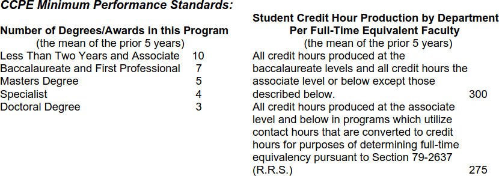
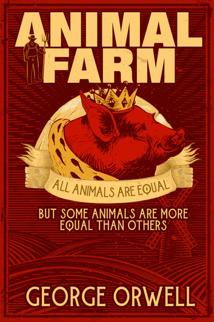

How NOT to Measure Academic Performance
University of Nebraska – Lincoln’s “Metrics”
2026-04-02
Outline
Timeline
Administration’s Claims
Data and Analysis (& Flaws)
- Distributions
- Inference
- Observational Units
- Ratios
- Comparisons
Conclusion
Timeline
Setting the Stage
- Structural budget deficit since at least 2020
- Cuts every year from 2020-2024: $75 million
- 2025 cuts:
- Eliminate the structural deficit: $21 million (estimated)
- Extra $6.5 million for “our share of UN system cuts”
The Chancellor’s Executive Leadership Team (ELT)
Responsible for assembling data, building metrics, and developing the budget cut proposal
Fac Senate & FS Exec Cmte
- March - Prog Eval Rubric will be from Coordinating Commission on Postsecondary Education (CCPE)

April - Broad outline of metrics (the devil is in the details!)
May - Timeline, draft metrics presented to DEOs/Deans
June - Degree cuts likely, ELT plan due June 30
- Interim EVC: Commitment to transparency, treating all depts equally
- FS Exec: “Why the gatekeeping? Get faculty input!!” -DEOs not able to share info w/ faculty
July - APC officers notified that APC will handle cuts
August - APC meets
- VC Davis - metric data is proprietary/confidential
Department POV
May 15 - Academic Program Metrics discussion
- Dept Exec Officers (DEOs), Deans, ELT
- Marked confidential – cannot be shared with faculty
August 15 - Metric values provided to Stat DEO

August 18 - Metric definitions provided to Stat Department Faculty
Sept 11 - Affected units notified by EVC Button or Interim VC Heng-Moss
shortly afterward - Full metrics spreadsheet begins circulating unofficially
Oct 1-10 - APC hearings

{kind=link}
{kind=link}
{kind=link}
{kind=link}
Timeline
{kind=link}
- \(\approx 140\) days where ELT could have talked to a Statistician
- Within 29 days, we found a huge number of problems
- ELT wanted us to have 0 days to examine the “full” metrics data1
Examining the Claims
Budget Cuts with Quantitative Data
Reasonable strategy … so where did things go wrong?
{kind=link}
Each additional FTE raises the average … significantly
Highly ranked departments eliminated!!
{kind=link}
Choice of Metrics
Teaching performance
Research performance
- Only for tenure-track faculty
Rolled into metrics:
- AAU membership criteria
- Salaries
ExtensionRevenueService
Claims
Transparent ProcessDepartments were consulted before plan was announced
All departments were treated equally
Can’t see/fix the data \(\Rightarrow\) not transparent
Claims
Transparent ProcessDepartments were consulted before plan was announcedAll departments were treated equally
Can’t see/fix the data \(\Rightarrow\) not transparent
…Informed, not consulted, one day before
Data and Analysis Flaws
🍓
🍊 🍑
🫐 🍓 🍓 🍓🍓🍊🍊 🍓 🍑🍑 🍉
🫐🫐🍇🍇 🍓🍓🍓🍓🍊🍊🍊🍊🍊🍊 🍑🍑🍑🍑🍏 🍉🍉🍉
🫐🫐🍇🍇🍇 🍓🍓🍓🍓🍓🍊🍊🍊🍊🍊🍊🍊🍊🍑🍑🍑🍑🍏🍏🍏🍏 🍍🍍 🍉🍉🍉🍉🍉🍉
🫐🫐🍇🍇🍇🍓🍇🍓🍓🍊🍊🍊🍊🍊🍊🍊🍊🍊🍊🍑🍑🍑🍏🍏🍏🍏🍏🍆🍉🍉🍍🍍🍉🍉🍉🍉🍉🍉🍉🍉Observational Units
Units
Observational unit:
the entity from which data is collected in a study
Analysis unit:
the entity from which data is analyzed in a study
Mapping between these can be tricky
but it is critical to get it right!!
Observation vs. Analysis
Instructional metrics: typically observed at the class or instructor level, analyzed by department
Research metrics: observed at the faculty level, analyzed by department
Complicated process for how to map individuals to departments by apportionment
But, individuals in a department change over time!
Department Composition
{kind=link}
Department Composition
{kind=link}
Department Composition
{kind=link}
Department Composition
{kind=link}
Department Composition
{kind=link}
- Still need to adjust for time since degree
Distributions
What’s in a Distribution?
{kind=link}
- Statistical definition: A function that gives probabilities of occurrence for possible events
What’s in a Distribution?
Operationally, to create distributions, we need:
- Comparable observational units (individuals)
- Consistent measurement method
- Reason to think evaluating the group of individuals makes sense
What’s in a Distribution?
{kind=link}
What’s in a Distribution?
{kind=link}
Mixture distributions can be useful in some situations… IF the goal is to understand the whole system
They’re less helpful if the goal is ranking groups
🫐 < 🍇 < 🍓 < 🍊 < 🍑 < 🍏 < 🍆 < 🍍 < 🍉
What’s in a Distribution?
Our actual mixture distribution is more like this:
{kind=link}
What’s in a Distribution?
Or this:
{kind=link}
What’s in a Distribution?
Or this:
{kind=link}
What’s in a Distribution?
If you have to work with a mixture distribution, you must account for lurking variables:
- instructional norms
(lab/classroom space, pedagogy, instruction method) - amount of grant funding that’s available in the discipline
- citation accumulation rate…. and many, many more
Statistics can be used to adjust for these factors, but not accounting for structural differencesinvalidates conclusions
What is in a Z score?
\(Z\)-scores can be used in two different ways:
make metrics on different scales comparable
make observations from different distributions (more) comparable
{kind=link}
What is in a Z score?
- Standardization makes metrics on different scales comparable
{kind=link}
What is in a Z score?
- Standardization makes metrics on different scales comparable
{kind=link}
What is in a Z score?
- Standardization helps with apples to pumpkins comparisons:
{kind=link}
What is in a Z score?
- Standardization within different groups:
{kind=link}
What is in a Standardization?
{kind=link}
Inference
Metrics Documentation
From Distributions of Instructional Metrics, May 17, 2025 by Jason Casey
With all of these metrics, there is no inferential interpretation being made: the values are known descriptives, rather than estimates of a parameter.
- OK, but… values don’t come from the same distributions
- Grad-only (or grad-dominant) programs vs. undergrad programs
- Grant funding isn’t similar across disciplines
- Department size matters - excess capacity -> maximize SCH
And we’re back to 🍎 and 🎃.The interpretation is important!
Metrics Documentation
From Distributions of Instructional Metrics, May 17, 2025 by Jason Casey
Our use of the z-score was as a simple scaling mechanism to aid in creating a centroid (i.e., the instructional averages).
Neither positive nor negative z-scores carry any interpretation other than distance from the mean in standard deviations.
A negative score does not imply that a unit does something poorly, nor does a positive imply the opposite interpretation.
Justification
{kind=link}
- Budget cuts based on metrics are fundamentally inferential.
- Not all inference is directly about parameters.
Justification
Educational administration is one of the lower performing units by UNL metric analysis for instruction and research. The unit was negative on seven of nine instruction metrics and six of eight research metrics.
– Josh Davis, Vice Chancellor, EDAD APC Hearing, Oct 9 2025
{kind=link}
Skewed Distributions
{kind=link}
Normalized scores should have mean = 0 and variance = 1
“Transparency”

Without \(\mu_X\) and \(\sigma_X\), there is no connection between an individual X and its Z-score.
Alleged “Z-scores” provided to departments were wrong
It was not possible for departments to vet the data
Skewed Distributions
An exam where 87% score zero is a bad exam.
{kind=link}
Skewed?? – Better Metrics
- Make the metric more inclusive: faculty with other awards are an indication of future potential for highly prestigious awards
{kind=link}
(Still) Skewed?? – Better Statistics
Use ranks, not raw values
Ranks can be converted to Z-scores
{kind=link}
- if denominator is known, Z-scores and percentiles can be converted into ranks
Ratios & Normalization
Ranks and Percentiles
The research performance of the Statistics Department at UNL is ranked 39th best out of 158 Statistics Departments.
ranks and percentiles are essentially ratios, and therefore depend very much on the denominator \(n\)
interpretation changes drastically depending on the denominator
citations_2014_2023_avg
AcA for 2020 to 2023: 11 faculty, 123 articles with 2,157 citations
| Metric | Ca lculation | Value | Rank | P ercentile |
|---|---|---|---|---|
| Citation count per article | 2,157 / 123 | 17.5 | 38 | 75.9% |
| Article count per faculty | 123 / 11 | 11.2 | 27 | 82.9% |
| Citation count per faculty | 2,157 / 11 | 196 .1 | 34 | 78.5% |
citations_2014_2023_avg for Statistics: 311.6167 … ???
… what is the denominator?
citations_2014_2023_avg
| Metric | Ca lculation | Value | Rank | P ercentile |
|---|---|---|---|---|
| Citation count per article | 2,157 / 123 | 17.5 | 38 | 75.9% |
| Article count per faculty | 123 / 11 | 11.2 | 27 | 82.9% |
| Citation count per faculty | 2,157 / 11 | 196 .1 | 34 | 78.5% |
| Metric | Ca lculation | Value | Rank | P ercentile |
|---|---|---|---|---|
| Citation count per article | 4,670 / 289 | 16.2 | 68 | 57.0% |
| Article count per faculty | 289 / 11 | 26.3 | 21 | 86.7 % |
| Citation count per faculty | 4,670 / 11 | 424 .5 | 49 | 69.0% |
citations_2014_2023_avg for Statistics: 311.6167 \(\approx\) 310.3 = (196.1 + 424.5)/2???
Different Disciplines:
different citation cultures 🍎 🎃
| Dept | Ci t ations | F aculty | Cit a tions/ F aculty | Rank | out of | Per c entile |
|---|---|---|---|---|---|---|
| Sta t istics | 2157 | 11 | 196.1 | 34 | 158 | 78.5% |
| P hysics | 15959 | 29 | 550.3 | 76 | 127 | 40.1% |
{kind=link}
What is in an average?
- Statisticians like averages: \(X_1, X_2, ... X_n\) with the same mean \(\mu\) and the same variance \(\sigma^2\),
\[ \frac{X_1 + X_2 + ... + X_n}{n} = \bar{X} \ {\dot\sim} \ N\left(\mu, \frac{\sigma^2}{n}\right) \]
Averages allow more precision, better predictions, more confident conclusions
… so why is dividing by
t_tt_headcount_2014_2023_avga problem?
What is in a ratio?
- If \(X\) and \(N\) are BOTH random variables, \(\frac{X}{N}\) has ratio distribution:
{kind=link}
Any signal gets lost in the variability, metrics do not reflect actual performance
Ratios in the Metrics
p1_expenditures_normalized1 = \[ \frac{\text{p1_expenditures_2014_2023_avg}}{\text{t_tt_headcount_2014_2023_avg}} \]total_sponsored_awards_inc_nuf_rsch_pub_serv_teach_avg_awards_budget= \[ \frac{\text{Average_total_sponsored_awards_inc_nuf_rsch_pub_serv_teach_fy2020_fy2024}}{\text{budget_from_evc_file_state_appropriated_budget}} \]instructional_sch_4Y_share_growth=
Change in share (percentage) of total instructional SCH from AY2020 to AY2024
- … every metric was ‘normalized’, most are ratios of RVs rather than averages
What is in a Cauchy Distribution?
- Cauchy: X/Y with E[Y] = 0. Division by zero, statistically speaking
{kind=link}
research_awards_growth_inc_nuf_fy20_fy24is in plot #6
What should have been done?
Observational units
Research performance measures products by faculty members, one at a time
Teaching performance measures classes, one at a time
Data based on single products and classes are auditable
But:
- Internal record keeping seems inconsistent, full of errors
- Rather than addressing errors in data and biases in metrics, told “nothing will change”
Comparisons
Scholarly Research Index (SRI)
measure created by Academic Analytics to evaluate research performance
based on # awards, # books, # citations, # articles, # grants, grant dollars, (clinical) trials and patents
{kind=link}
SRI for all Statistics Departments
{kind=link}
SRI allows – under certain circumstances – a comparison across fields, SRI percentiles by field would be better
SRI for all Statistics Departments
{kind=link}
SRI for all Statistics Departments
{kind=link}
SRI Shift for other Departments
{kind=link}
“All departments are treated the same way” – Definitely not!
Checking the Claims
Transparent ProcessDepartments were consulted before plan was announced???All departments were treated equally 😬😱

Missed Opportunity
Rather than using Public AAU as a measuring stick to punish with
Use difference strategically for investment:
SRI\(_{\text{Public AAU}}\) - SRI\(_{\text{Public}}\)
Size of differences indicate AAU relevance
Conclusions
Metrics
Statistical fundamentals matter! distributions, observational units, variance, and real-world interpretation
The general description of the metrics sounds good, but
- The implementation is incredibly problematic
Inferential intent - using metrics to make these choices
- Disclaimers don’t fix the results – negative scores were used to infer poor performance
- AAU metrics are like the hard, summative problems on exams – it’s important to measure the precursors
Fixes
Use SRI percentile instead of the other research metrics (translate to a z-score if necessary)
Don’t take ratios of random quantities
Compare like to like – graduate vs. undergraduate credit hours, service vs. major courses.
Only evaluate stable programs – use a 5-year grace period (consistent with CCPE guidelines)
- Involve statisticians in the process!!